И так, давайте начинать!
Двигаться мы будем в следующем порядке:
Добавляем удобство:
Начнем с расширений, которые помогут упростить нам работу в редакторе кода.
Перейдите во вкладку "расширения" (либо прожмите комбинацию клавиш "CTRL+SHIFT+X") и найдите в поисковой строке следующие плагины:
- 1. Russian Language Pack for Visual Studio Code - расширение для тех, кому хочется видеть интерфейс, на родном языке:
-
2. Auto Rename Tag - прекрасное расширение, упрощающее вам работу, меняет значения тега и в начале, и в конце:
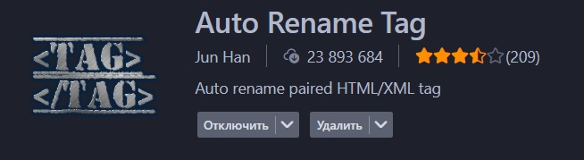
-
3. Live Server - очень полезное расширение, демонстрирует вам в браузере результат работы, например, ваш Front-End макет:
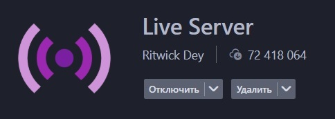
-
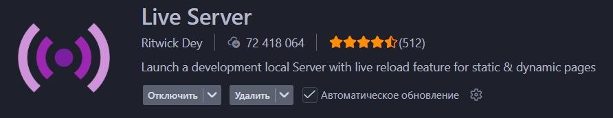
Цветовые схемы:
В этом блоке мы добавим цвет нашему редакотору кода, используя всего два расширения.
И так, устанавливаем следующие плагины:
-
1. Peacock - добавит нам цветовые схемы в интерфейс. Выбирайте, какой вам больше по душе:
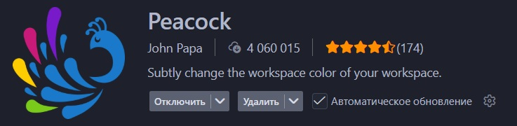
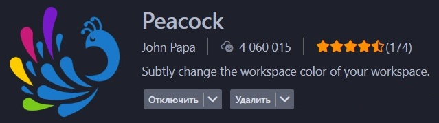
-
2. Bearded Theme - добавит в VS Code цветовую тему рабочего пространства.
Команда нашего сайта рекомендует использовать тему Monokai Metalian:
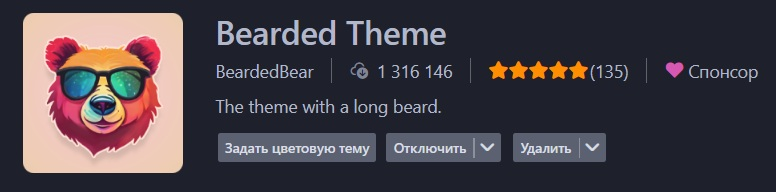
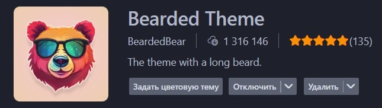
Наводим красоту:
С плагинами почти закончили, осталось еще два. Здесь мы поговорим о красивых иконках и цветных колонках.
Устанавливаем следующие расширения:
-
1. VSCode-Icons - добавляет в "ПРОВОДНИК" красивые иконки файлов и папок:
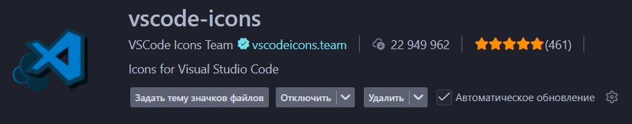
-
2. Indent-Rainbow - окрашивает колонки в редакторе кода в разные цвета. Это и красиво, и добавляет нам удобство в пользовании кодом:
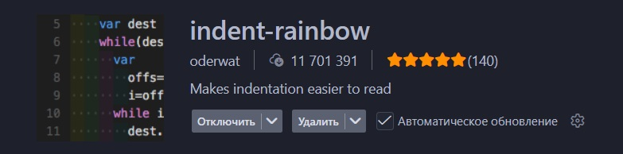
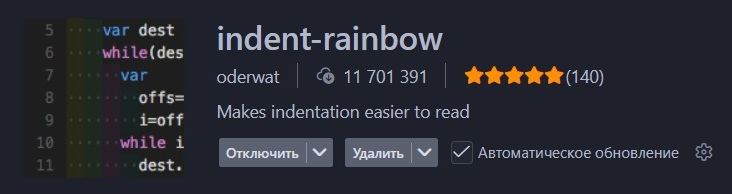
Шрифты/Курсор:
Дело осталось за малым. Установим с вами шрифты и немного модифицируем курсор в редакоторе.
Начнем со шрифтов. Вы можете установить себе любой шрифт с Google Fonts, но наша команда настоятельно рекомендует прекрасный шрифт от компании JetBrains - JetBrains Mono:
-
1. Первым делом переходим на сайт компании JetBrains (ссылка сверху), нажимаем на кнопку "Download" и скачиваем архив со шрифтами. Дальше распаковываем и переходим в папку "ttf", выбираем нужный по толщине, кликаем два раза и устанавливаем:
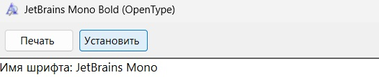
-
2. Далее переходим во вкладку "Управление", далее нажимаем на "параметры":
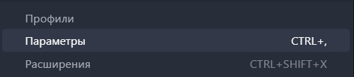
-
3. Ищем "Текстовый редактор" в нем "Шрифт/Font", во вкладке "font-family" пишем "JetBrains Mono":
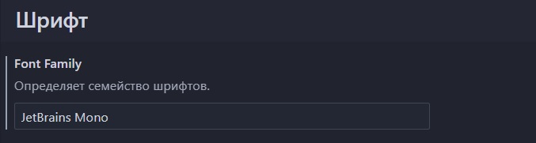
Теперь беремся за курсор.
Нам понадобится всего две настройки:
-
1. Во вкладке "Курсор" ищем настройку "Cursor Blinking", ставим "expand":
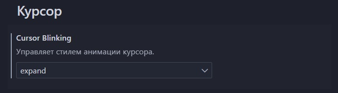
-
2. Затем ищем настройку "Cursor Smooth Caret Animation" и ставим настройку "on":
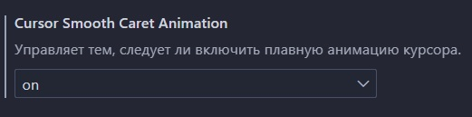
Поздравляем вас, дорогие чиатели, вы смогли кастомизировать VS Code. Мы очень надеемся, что эта статья была вам полезна и желаем удачи в ваших начинаниях.